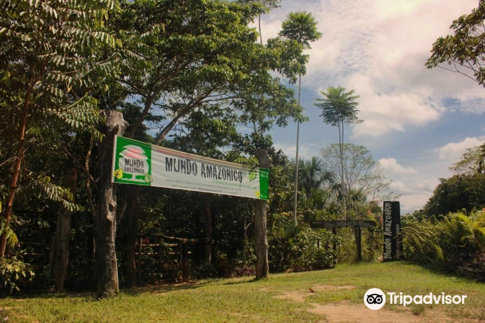
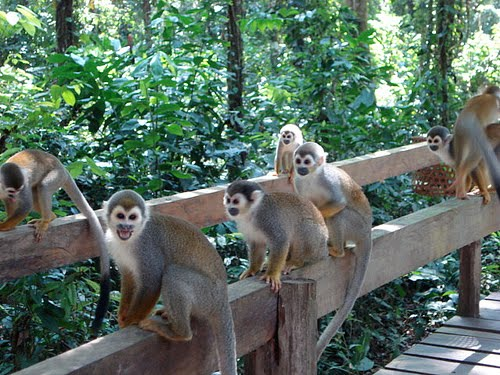
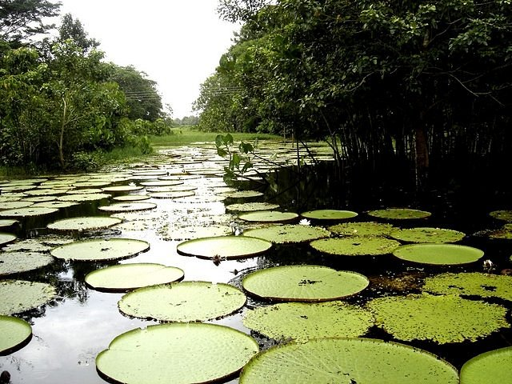

Leticia
What to do in Leticia?
Ecological Park Mundo Amazónico
Mundo Amazonico is a space to see Amazonian plants, learn about traditional and medicinal uses while enjoying
an interactive, fun and unforgettable experience learning about the biodiversity of the Amazon, ecology, community tourism
and much more. A constant exchange of traditional knowledge about the use of native plants.
¨It is the first visit you should make to the Amazon!!¨
Isla de Los Micos
Dare to live a new adventure in the Isla de los Micos Natural Reserve, located 35 km from Leticia and about 45 minutes by boat. by the Amazon River with an area of 450 hectares. Learn about the history of monkeys on the island and the different species that live there while the indigenous environmental interpreter illustrates us about their behavior, social organization, reproduction and feeding.
Amazon Maguta Jungle Lodge
The Yahuarcaca lakes, in the municipality of Leticia, can be navigated by kayak through the jungle while rubber and red cedar trees parade on the sides; herons, eagles, hawks and lazy monkeys that distract travelers in search of the royal victoria, the largest lotus in the world. In other lakes, like Tarapoto, two kilometers from Puerto Nariño, gray and pink dolphins appear.
Natural reserve Tanimboca

The Tanimboca Natural Reserve is a unique accommodation 13 kilometers from Leticia, in the heart of the Amazon jungle and a short distance from the emblematic Amazon River. Travelers will sleep among the trees, as the establishment is made up of “malojas” or traditional indigenous houses that sit 12 meters high, in the treetops. The cabins offer rustic decoration, with a bed with mosquito net, table and individual bathroom. In addition, the cabins have windows all around so that travelers can contemplate the jungle.